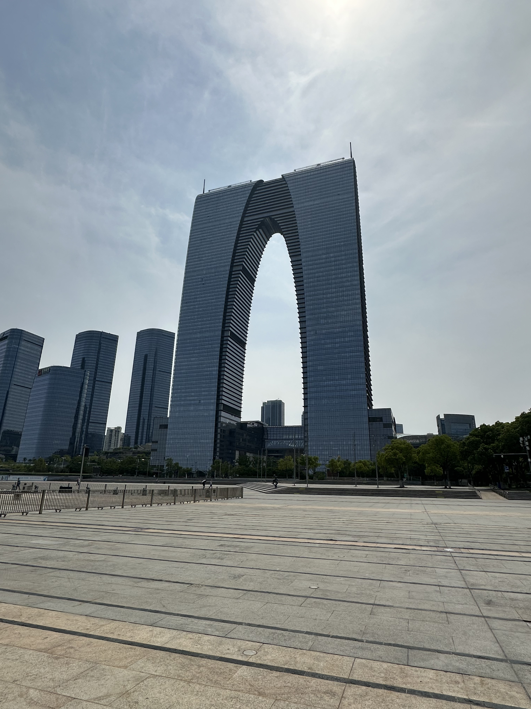

It was an early Tuesday morning which began with the sharp beep of the Shanghai subway, surrounded
by a crowd of people during the early morning rush hours who needed to go to work. It took 3 hours
to get to Jinji Lake via Shanghai Metro Line 11. I had been to Suzhou several times before this trip
but it was the first time I went to Jinji Lake, which is a new area in Suzhou, China.
Gate to the East: An important landmark and building of Suzhou
Gate to the East is a very prominent building near Jinji Lake, which is the second
tallest building in Suzhou behind Suzhou International Financial Square. Standing
by Jinji Lake, the towering arch of the Gate to the East felt like the true portal
between Suzhou's ancient water-town heritage and its furutistic skyline which was like
Shanghai's futuristic timeline. Exploring the bustling plaza right at the foot of the
landmark offered an energetic mix of modern architectyure, great dining and open lakeside
views at an ice cream shop named lapecoranera.

A photo of Gate to the East in Suzhou, China.
Conclusion
Overall, my trip to Jinji Lake was an excellent experience. The combination of the beautiful
scenery, delicious food, and relaxing ice cream break made the trip a memorable day. I would
highly recommend visiting Jinji Lake to anyone looking for a peaceful escape from the hustle
and bustle of city life.The return trip to Shanghai, China involved several hours of travelling
through the Suzhou Metro Line 3 and 11 and the Shanghai Metro Line 11 approximately the same
amount of time as I took to get to Jinji Lake. Back to Shanghai, I was able to reflect on how
this trip was a great way to experience the culture of Suzhou. To date, I have been to several
cities in China outside of Shanghai, which is my hometown, which included Shangrao, Suzhou,
Ningbo, Nantong, Guangzhou, Shenzhen, Hangzhou, Huzhou, Beijing, and Nanjing.